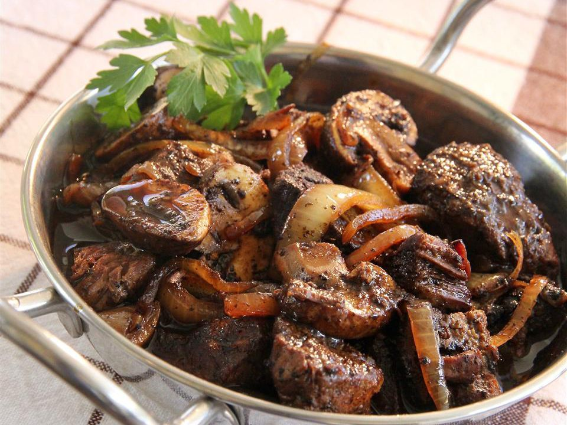

Boeuf Bourguignon Recipe
The pot roast's progenitor but French, so better.
Ingredients
- 1/4 cup of vegetable oil
- 5 onions, sliced
- 2 lbs of lean beef
- 1/4 teaspoon of all-purpose flour
- 1/4 teaspoon of dried thyme
- 1 cup of red wine
- Freshly-ground black pepper
- 1/2 cup of beef broth
- 8 ounces of fresh-cut mushrooms
Recipe
- Heat the oil: cook and stir onions until tender.
- Cook beef: until browned. Sprinkle in thyme, poor wine and reduce over low simmer
- Stir onions and mushrooms: Cook, stirring occasionally until mushrooms are tender and sauce is thick and dark brown.
